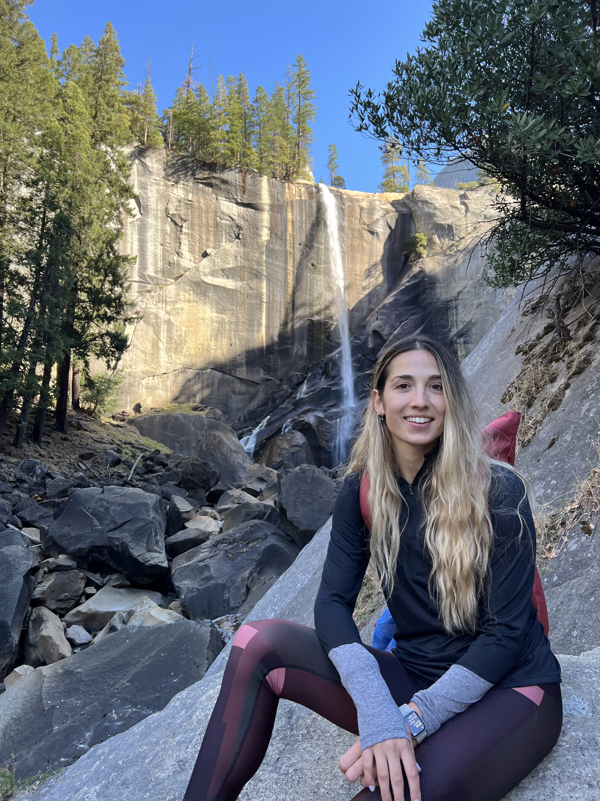

CS342 · Building for Digital Health
A project course for computer science students and School of Medicine faculty building digital platforms that directly impact healthcare or clinical research.
Machine Learning in fitness and health · Apple
Turning health data into useful intelligence

I am a Senior Machine Learning Engineer at Apple, on the Applied Sensing & Health team, based in Cupertino, CA.
Before Apple, I was a postdoctoral researcher in Biomedical Data Science (Daneshjou Lab) and the Institute for Human-Centered AI at Stanford, where I worked on multimodal learning and automated evaluation at scale, from efficient medical imaging models (Med-REDUCE) to automated validation of clinical text (MedVAL, SAFRAN). Earlier at Stanford, I was part of Biodesign Digital Health at the Mussallem Center for Biodesign, where I developed the Spezi Data Pipeline for interoperable wearable and EHR data workflows under the mentorship of Dr. Oliver Aalami.
I hold a Ph.D. in Biomedical Engineering from EPFL (2021), advised by Prof. Nikolaos Stergiopulos, where I developed non-invasive cardiovascular monitoring tools that combine machine learning with physics-based modeling. I received my diploma in Electrical and Computer Engineering from the Aristotle University of Thessaloniki (2017).
A project course for computer science students and School of Medicine faculty building digital platforms that directly impact healthcare or clinical research.
Fundamentals of fluids for engineering students: statics, Bernoulli equation, kinematics, control volume and differential analysis, dimensional analysis, and viscous pipe flow.
Cardiovascular physiology through blood biophysics, cardiac mechanics, hemodynamics, and biomechanics of the arterial and venous systems.